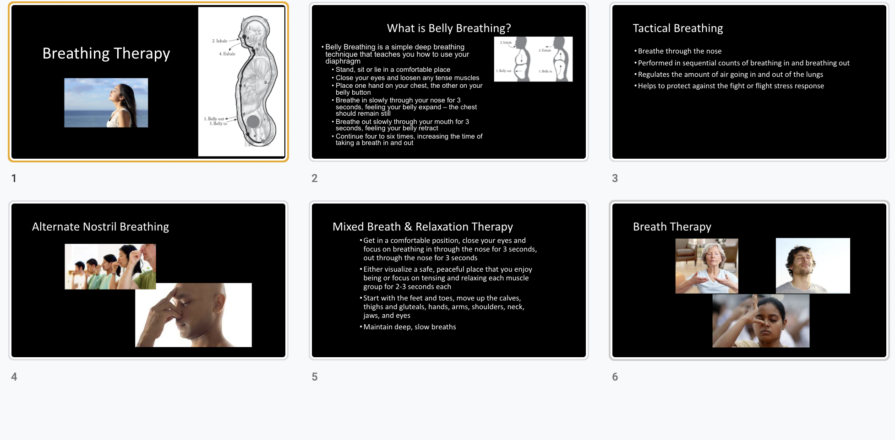

REDESIGN SPINE APP
Overview
The overall goal of the Spine app is to improve functionality and quality of life among people living with chronic low back pain (cLBP). It provides module videos to introduce professional self-management knowedge and physical training to patients and motivate patients to form good living habits.
As the UX designer, I defined current usability problems, analyzed information architecture and user journey, improved user experience, established design system, and delivered a polished design.
Work
User Research, UI design, Motion Design
Tool
Adobe Illustrator, Sketch, After Effects, InVision
DEFINE THE PROBLEMS
Since it is a redesign project, at the very first stage, I had several meetings with the stakeholders to understand their vision and goals, the current app functionalities, and their specific design requirements. Then I conducted heuristic evaluation independently with the current app to find out current usability problems.
Based on the the meetings and heuristic evaluation, I concluded three main problems.
Problem1
The organization of app content and functionality are not concise and clear, therefore, users have difficulty navigating in the app to find information and complete their task.
Problem2
Lack of an engaging and interactive experience motivates users to learn related knowledge.
Problem3
Lack of UI design aesthetics and visually appealing module animations.
SOLVE PROBLEM 1
Reorganize app content and functionality to help users navigate and complete their task.
In order to present app content and functionality in a clear and more understandable way, I analyzed and concluded the current information architecture and revised it.
Before
After
By revising the information architecture, the hierarchy of the app is more concise,users can 1. set up different types of goals, 2. directly navigate to daily task and complete them. 3. choose suitable modules and learn related knowledge.
Before & After Interfaces Comparison


SOLVE PROBLEM 2
Create an engaging and interactive experience that motivates users to learn related knowledge.
In order to design an engaging and interactive learning experience for users, I analyzed the user journey about the learning experience and improved the user journey by designing five learning phases and related user tasks.
Before
After
Revised interfaces
SOLVE PROBLEM 3
Convey more elegant visual design by designing aesthetic interfaces and engaging module videos.
Establish design system
One of the main goals is to give the current app a visual depth. Therefore, I contributed to designing visual elements including colors, typography, iconography, and UI patterns to establish a design system. In addition, I referenced the material design guidelines and latest design trends to make sure the new visual design is modern, creative, and aligns with the industry standards.

Hi-fidelity Prototype
Redesign module videos
Before the module videos are PPT videos, it lacks visual appealing and storytelling. Users have difficulty engaging with and follow its instructions to do activities. Therefore, I designed 2d animations based on the script and voiceover clients provided.
Before
Before
All Works


© Designed by Yucheng Hang